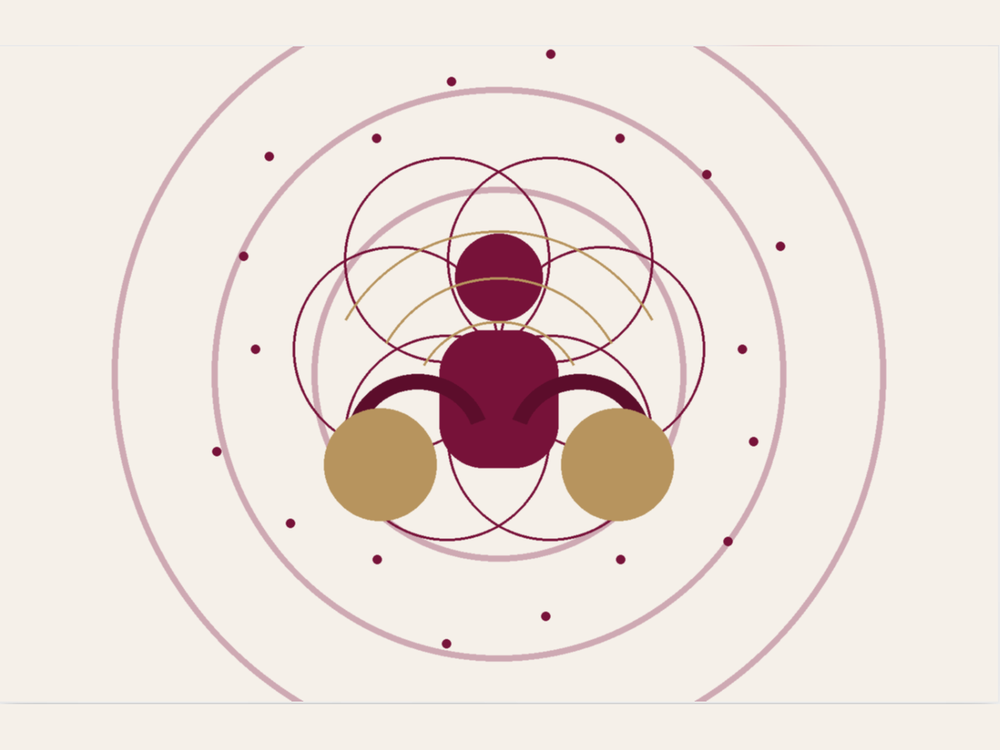
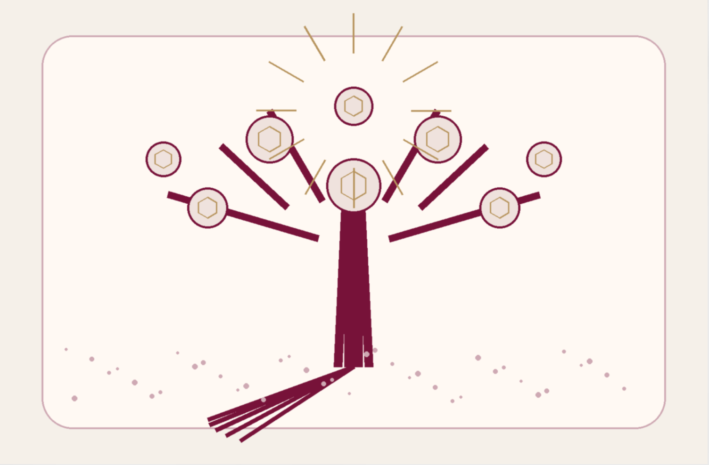

Sessioni di Quantum Touch Releasing® Online
Sessioni di Quantum Touch Releasing® (QTR®) online con professionisti verificati. Una tecnica meditativa energetica vibrazionale fondata da Ileana Rotella che, nel linguaggio del metodo, unisce intenzione, simboli, parole, geometria sacra e principi di fisica quantistica per accompagnare la persona verso benessere, fiducia e maggiore chiarezza nel proprio percorso. Pratica bionaturale di consapevolezza e crescita personale — non sostituisce psicoterapia, diagnosi o cura medica.

Cos'è Quantum Touch Releasing® (QTR®)?
Quantum Touch Releasing®, spesso abbreviato in QTR®, è una tecnica meditativa energetica vibrazionale fondata da Ileana Rotella. Secondo la QTR Academy, combina principi di fisica quantistica e geometria sacra con un lavoro di intenzione, simboli e parole, con l'obiettivo di risvegliare benessere e rendere più semplice orientarsi verso i propri obiettivi nelle diverse aree della vita.
QTR® lavora attraverso particolari note vibrazionali composte da simboli e parole, guidate da un'intenzione specifica. Nel linguaggio della tecnica, queste note vengono usate per portare attenzione ai blocchi energetici personali o ereditati attraverso l'albero genealogico: schemi che possono mantenere la persona intrappolata in dinamiche di sofferenza, bassa autostima o perdita di fiducia.

Non viene presentata come una terapia alternativa nel senso convenzionale, né come un percorso spirituale generico. La QTR Academy la descrive come uno strumento di trasformazione che semplifica la vita, agendo sulle frequenze più profonde dell'identità, dove i blocchi avrebbero origine prima di manifestarsi nel corpo, nella mente o nelle scelte quotidiane.
Su Holistic Unity la presentiamo come pratica bionaturale, meditativa ed esperienziale: uno spazio per ascoltare ciò che si ripete, riconoscere le radici di un blocco e aprire un movimento interiore più consapevole, senza promesse e senza sostituire percorsi medici o psicologici.
Come Funziona una Sessione di QTR®
Intenzione e Ascolto
Condividi il tema che desideri esplorare: un blocco, una paura, una scelta, una relazione o una sensazione che continua a tornare nella tua vita.
Spazio Meditativo
Il professionista ti accompagna in uno stato di maggiore calma e presenza, creando le condizioni per osservare il tema senza forzare, giudicare o razionalizzare troppo.
Lavoro con Simboli e Frequenze
La tecnica utilizza particolari note vibrazionali composte da simboli e parole, guidate da un'intenzione specifica. Questi elementi vengono usati come strumenti di consapevolezza e trasformazione energetica.
Integrazione
La sessione si chiude con un momento di rientro e integrazione. Puoi portare con te nuove intuizioni, una sensazione di maggiore chiarezza o semplici indicazioni per continuare ad ascoltarti.
Ogni professionista può avere il proprio modo di condurre la sessione, ma la struttura di base rimane orientata all'ascolto, alla presenza e al lavoro energetico sul tema portato dalla persona.
A Cosa Può Servire QTR®
Osservare Schemi Ricorrenti
Porta attenzione a dinamiche che si ripetono nel tempo: autosabotaggio, senso di blocco, difficoltà nelle relazioni, sfiducia, bassa autostima o fatica nel prendere decisioni.
Un Linguaggio Simbolico ed Energetico
Il metodo usa simboli e intenzioni come linguaggio di accesso a ciò che spesso non è spiegabile con la sola mente razionale, favorendo una maggiore percezione del corpo, della presenza e delle sensazioni sottili collegate al tema esplorato.
Esplorare le Radici, Ritrovare la Direzione
Nella prospettiva QTR®, alcuni blocchi possono essere collegati al sistema familiare o a modelli ereditati. La sessione offre uno spazio per guardarli con più consapevolezza e, senza promettere soluzioni immediate, sentire con più chiarezza dove ti trovi e quale movimento interiore desideri compiere.
Per Chi Può Essere Indicato QTR®
Una sessione di QTR® può essere adatta a chi si sente attratto da un lavoro energetico, meditativo e simbolico e desidera esplorare un tema personale senza entrare necessariamente in un racconto lungo o puramente mentale. Può interessare chi sente di ripetere sempre gli stessi schemi, chi vive un momento di transizione, chi desidera lavorare su autostima e fiducia, oppure chi vuole osservare il proprio percorso da una prospettiva più intuitiva e spirituale.
Domande Frequenti
No. È una pratica energetica e meditativa di consapevolezza e crescita personale. Non effettua diagnosi, non cura patologie e non sostituisce percorsi sanitari o psicoterapeutici.
Sì, molte pratiche energetiche e meditative vengono proposte anche online. La sessione richiede uno spazio tranquillo, una connessione stabile e disponibilità all'ascolto.
No. È sufficiente arrivare con un tema o un'intenzione. Il professionista ti guida passo dopo passo nel processo.
Nel linguaggio QTR®, simboli, parole e intenzioni vengono usati come strumenti vibrazionali e meditativi. Non sono strumenti diagnostici, ma elementi del metodo con cui il professionista accompagna l'esplorazione del tema.
Dipende dalla persona, dal tema e dal tipo di percorso. Alcune persone scelgono una singola sessione esplorativa, altre preferiscono lavorare su più incontri.
Sei un Professionista di Quantum Touch Releasing®?
Unisciti a Holistic Unity e offri sessioni di QTR® a chi desidera esplorare gli schemi ricorrenti e riconnettersi con una direzione più profonda e consapevole.
Diventa un Praticante di Holistic Unity